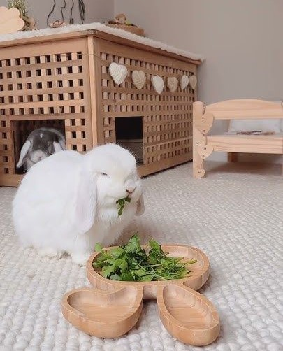

Discover the Cutest Bunnies and Fun Facts
Bunnies are small, adorable creatures known for their long ears, fluffy tails, and playful nature.
Fun Bunny Facts
- Bunnies can rotate their ears 180 degrees.
- A bunny's teeth never stop growing.
- Bunnies have almost 360-degree vision.

Steps to Take Care of Your Bunny
- Set up a comfortable, spacious cage or pen.
- Provide a healthy diet with hay, fresh vegetables, and water.
- Clean the cage regularly to maintain hygiene.
- Give your bunny plenty of exercise and playtime.
- Schedule regular vet visits to ensure their health.
Learn more about bunny care
here